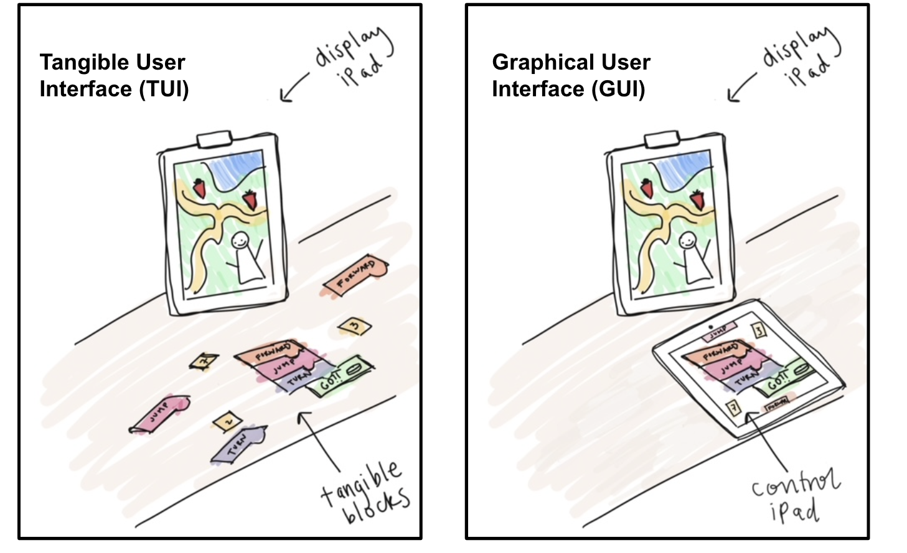

tldr;
With my collaborators, I conducted a mixed-methods analysis of children’s collaboration while playing a computational game. We systematically compared how two different interfaces influenced children’s behavior by examining video data of children playing with the game. In addition to contributing to qualitative analysis, I ran statistical analysis in Excel and Stata and synthesized quantitative findings for publication.
The project team consisted of Dr. Mmachi Obiorah, Dr. Mike Horn, and myself. This project began in January 2021 and is ongoing. This work is a continuation of prior work by Hu et al.
Introduction
The goal of our project was to compare how the design of a game influences the way children collaborate with one another. In particular, our study aimed to compare two different versions of the same game, shown below:

The objective of the game is to guide a character, named Awbie, towards strawberries that are hidden in a forest. Players accomplish this by constructing lists of instructions with physical blocks that include actions like ‘forward’ or ‘jump.’
In the tangible version, users manipulate physical blocks that fit together like puzzle pieces to give the character instructions. In the graphical version, users are given a second iPad with virtual blocks that they can connect on the screen in order to give instructions to the character.
My task, in collaboration with my teammate Mmachi Obiorah, was to conduct an analysis comparing how users collaborate while playing the two different versions of the game.
Part 1: Grounded-theory qualitative analysis
Actions and Talk
We developed codes by analyzing the way children manipulated game artifacts and talked to each other. The emerging codes from our initial observation of videos were organized into two categories:
- physical codes that included children’s physical interaction with game artifacts and with each other (e.g. blocking pieces, wrist grab, etc.)
- verbal codes (e.g. turn talk, strategy talk and enjoyment talk).
To systematically compare what we saw, we divided each video up into 15 second windows. During each window, we asked ourselves “do we see any physical actions or talk occuring?”.
Codes could occur concurrently–a child could make an action (i.e. grabbing a piece) while talking (i.e. saying “I have an idea!”) within the same 15 second window.

We iteratively refined these codes through discussions and analytic memos. We independently watched and coded the videos, then discussed any discrepancies. We continued this process until we reached agreement on every code (Cohen’s kappa value of 0.7 or above). After achieving inter-rater reliability, we divided up the entire dataset and coded the videos in their entirety.
Disengagment
To supplement our codes that described physical actions and verbal comments, we created another metric that we called disengagement. We defined disengagement as any instance of a child looking away, speaking off-topic, or walking away for at least 3 seconds. We coded the videos using the same procedure as our Actions and Talk codes.
Part 2: Statistical analysis
With our data qualitatively coded according to children’s actions, talk, and disengagment, we used quantitative analysis to better understand patterns across the dataset. In particular, we sought to understand:
- Are there differences in engagement between the two versions of the game?
- Are there differences in engagement between the first half and second half of each session?
The goal of question 1 was to understand if there were significant differences in engagement correlated with interface modality. We hypothesized that the tangible version of the game would allow more opportunities for both partners to engage and test out ideas at the same time. This hypothesis is informed by theories of tangible interaction, and how to design technology for collaboration.
The goal of question 2 was to understand how the order that children played the two versions of the game impacted their engagement. We hypothesized that children might be tired by the second half of the session, and that their engagement would change regardless of which version they played.
Findings
Our quantitative analysis revealed the following:
-
There was only a moderate difference in engagement between the two game conditions. Specifically, we observed similar levels of verbal engagement with both versions of the game. Perhaps unsuprisingly, we observed more physical engagement in tangible condition.
-
Our hypothesis regarding order effects was confirmed–participants were significantly more disengaged in the second half of the session, regardless of the version they played.
Take-aways
Our analysis did not reveal one version of the game to be significantly more engaging across the board. This work makes the following contributions:
-
We observed children using gestures and talk that have been noted in previous literature, replicating their results.
-
We made progress in determining the most effective methodological approaches for this kind of interaction analysis. In particular, future work should consider how they partition video data for analysis.
-
We observed that interface design significantly influences children’s physical engagement with the product and one another. This warrants future work to explore this relationship.